Koji Aoshima¹˒², Martin Servin²˒³
¹ Komatsu Ltd.
² Umeå University
³ Algoryx Simulation
물리 기반 시뮬레이터가 토양 더미에서 버킷 채움을 수행하는 실제 휠 로더를 얼마나 잘 재현할 수 있는지 조사한다. 차량의 운동 및 구동력, 적재 질량, 총 일에 관한 현장 시험 시계열을 사용하여 비교한다. 차량은 마찰 접촉, 동력전달계, 선형 액추에이터를 갖춘 강체 다물체 시스템으로 모델링하였다. 토양에는 다중스케일 가속을 적용하거나 적용하지 않은, 서로 다른 해상도의 이산요소 모델을 시험하였다. 시공간 해상도 범위는 50–400 mm와 2–500 ms였으며, 계산 속도는 실시간보다 1/10,000배에서 5배 빠른 범위였다. 시뮬레이션-현실 격차는 약 10%로 나타났으며, 충실도 수준에 대한 의존성은 약했다. 예를 들어 실시간 시뮬레이션과도 양립할 수 있었다. 또한 서로 다른 시뮬레이션 도메인 사이에서 전이할 때 최적화된 힘 피드백 제어기의 민감도를 조사하였다. 도메인 격차가 약 15%임에도 도메인 편향으로 인해 성능이 5% 감소하는 것이 관찰되었다.
시뮬레이터는 중장비와 험지 차량의 자율 제어를 개발하는 데 필수적이다. 시뮬레이터는 개발 초기 단계에서 성능을 시험하고 최적화하기 위한 통제되고 반복 가능한 실험을 안전하고 효율적으로 수행할 수 있게 한다. 이에 따라 딥러닝 방법을 활용하는 데 필요한, 주석이 달린 대량의 합성 훈련 데이터를 생성할 수 있다 [31, 27, 7, 48, 13].
제한 요인은 계산 속도와 시뮬레이터가 실제 시스템을 얼마나 정확하게 반영하는가이다 [9]. 현실 격차는 피할 수 없지만, 시뮬레이션 시스템과 실제 시스템 사이의 차이가 너무 크면 시뮬레이션 도메인에서 최적화된 해법은 실제 도메인으로 제대로 전이되지 않는다 [26, 47]. 반면, 정밀한 해상도의 시뮬레이터는 준최적 해법, 성능이 낮은 해법, 또는 위험한 해법을 구별하는 데 필요한 시뮬레이션을 실행하기에는 지나치게 느려지기 쉽다.
토공 장비의 경우 현실 격차를 어떻게 측정해야 하는지, 현실 격차가 시뮬레이터의 해상도 수준에 어떻게 좌우되는지, 또는 현실 격차가 결과의 전이 가능성에 어떤 영향을 미치는지에 관한 지식이 거의 없다. 이를 위해 서로 다른 충실도 수준의 휠 로더 시뮬레이터를 구성하고, 이들이 서로 어떻게 다른지 그리고 버킷 채움 작업을 수행하는 실제 휠 로더와 어떻게 다른지 검토한다. 힘 피드백 제어를 이용한 자동 버킷 채움에 사용될 수 있는 합성 센서 데이터와 실제 센서 데이터의 관점에서 비교를 수행한다.
두 유형의 시뮬레이터를 사용한다. 두 경우 모두 차량은 마찰 접촉과 비매끄러운 동역학을 갖춘 3D 강체 다물체 시스템으로 모델링된다. 차이는 지형을 이산요소 모델(DEM)을 사용하여 해석하느냐, 축약된 다중스케일 모델을 사용하여 모델링하느냐에 있다. 후자는 차량-토양 역학 해석에 관례적으로 사용되지만 정상 상태 조건에 국한되는 기본 토공 방정식(FEE)을 다물체 동역학으로 일반화한 것으로 이해할 수 있다. 일반적인 발상은 토양 변형의 활성 영역을 예측하고, 이를 동적 물체이자 차량 시스템에 추가되는 다물체 구속조건으로 나타내는 것이다. 활성 영역의 질량 유동은 공동 시뮬레이션되는 DEM 모델로 근사한다. 여러 물리 엔진에는 이러한 일반적 발상을 구현한 여러 방식이 존재한다 [19, 22, 37].
시뮬레이터의 시공간 해상도 범위는 50–400 mm와 2–500 ms이며, 계산 속도는 실시간보다 10^-4배에서 5배 빠른 범위이다. 시뮬레이터에는 현장 시험에서 사용한 것과 동일한 감지 기능이 갖추어져 있으며, 여기에는 선택된 관절과 액추에이터의 운동학 및 힘 센서, 적재된 재료의 중량 추정치, 적재 전 더미 표면의 형상이 포함된다. 측정된 시계열, 적재 질량, 기계적 일을 사용하여 시뮬레이터와 현장 시험을 비교한다. 운전자의 차량 제어는 피드포워드 제어를 사용하여 재현한다. 마지막으로 실시간 시뮬레이터에서 최적화된 힘 피드백 제어기를 훨씬 더 높은 충실도의 시뮬레이터로 전이할 때 그 도메인 민감도를 조사한다.
과학 문헌에는 휠 로더와 그 환경 양쪽의 전체 동역학을 나타내는 전체 시스템 시뮬레이터의 사례가 거의 없다. 예외로는 특정 형상의 토양 더미가 주어졌을 때 굴착 계획의 결과를 예측하거나 [4] 최적화하는 [30] 연구와, 딥 강화학습 기반 제어 [7] 또는 비선형 모델 예측 제어 [41]를 사용한 로더 자동화 연구가 있다. 시뮬레이터를 실제 휠 로더를 이용한 현장 시험과 직접 비교한 연구는 [4]뿐이었다. 본 연구는 이 연구를 직접 확장한 것이다.
[6]에서는 시뮬레이션 환경에서 딥 강화학습을 사용하여 차륜형 퍼올림 로봇의 제어기를 개발한 다음, 아무런 도메인 적응 없이 물리적 로봇으로 전이하였다. 예상대로 시뮬레이션과 실제의 버킷 궤적, 퍼 올린 질량, 적재 시간 사이에서 두드러진 차이가 관찰되었다. 시뮬레이션 시스템과 실제 시스템 사이의 어떤 불일치가 결과의 차이를 유발했는지에 관해서는 어떠한 결론도 내리지 않았다. 접촉력 변화에 대한 높은 민감도가 보고되었다. 가능한 설명은 시뮬레이터가 지나치게 거친 입자를 사용했다는 것이다. 버킷은 대략 15개의 입자를 수용할 수 있었던 반면, 실제 재료의 입도는 훨씬 더 미세했다.
토양에는 이산요소법(DEM)을, 버킷 형상에는 운동학적 제어를 사용하여 버킷 궤적, 채움 계수, 기계적 일 사이의 관계를 조사한 여러 시뮬레이션 연구가 있다 [16, 17, 33, 44]. 그러나 종설 [11]에서 지적했듯이, 토양 유동과 휠 슬립 같은 토양-차량 상호작용의 예측 불가능한 특성 때문에 미리 정한 굴착 궤적을 정밀하게 추종하는 것은 일반적으로 불가능하다. 더 나쁜 점은 운동학적으로 실현 가능한 궤적이라도 주어진 토양 동역학과 동력전달계 및 유압 구동의 물리적 한계 아래에서는 실현할 수 없을 수 있다는 것이다.
[17]에서는 운동학적으로 제어되는 버킷이 사전에 계획된 다수의 궤적을 따라 자갈을 적재하는 준2D DEM 시뮬레이션을 수행하였다. 버킷의 속도와 힘을 매핑 함수에 입력하면, 이 함수가 리프트 실린더와 틸트 실린더에서 이에 대응하는 속도와 힘을 출력하였다. 엔진, 동력전달계, 유압장치를 포함한 휠 로더 모델을 사용하여 동적 계획법으로 최적 궤적과 제어를 구하였다. 최적해의 연료 소비량은 숙련 운전자가 수행한 현장 시험 중 연료 효율이 가장 높은 적재 사이클보다 14% 높았다. 이 최적화는 추가적인 시스템 시뮬레이션을 피하는 방식을 고안하면서 시뮬레이션-현실 격차가 없다고 가정하였는데, 당시 각 적재 사이클에는 23 CPU 시간이 필요했다.
[44]에서는 현장 시험의 시계열 측정값을 운동학적으로 제어되는 로더 메커니즘에 입력하고 토양의 DEM 표현과 공동 시뮬레이션하였다. 시뮬레이션과 실제의 작업 저항은 평균 편차 7%로 일치했지만, 더미 형상과 DEM 모델 매개변수를 어떻게 설정했는지에 관한 설명은 없었다.
휠 로더 동역학만을 다루거나, 휠 로더 동역학을 토양이 버킷에 가하는 힘의 단순화된 모델과 결합한 모델에 관한 방대한 문헌이 존재한다. 관절식 다물체 시스템, 유체기계식 파워트레인, 타이어의 동역학을 포함하는 한 정교한 모델은 다양한 작업 사이클의 작업 패턴과 에너지 흐름을 분석하고 최적화할 목적으로 개발되고 검증되었다 [35, 25]. 이 경험적 재료 모델은 버킷에 작용하는 힘을 예측하지만 토양 동역학을 명시적으로 모델링하지 않으며, 토양 동역학에 관해서는 평가되지 않았다.
시뮬레이터는 실제 시스템을 이상화한 복제품이며, 동일한 제어 신호가 입력되더라도 어느 정도 다르게 거동하는 것은 피할 수 없다. 이러한 불일치의 잠재적 원인은 크게 모델 오차, 수치 오차, 구현 오차로 분류할 수 있다. 모델 오차에는 모델링되지 않았거나 지나치게 단순화된 형상과 물리, 부정확한 모델 매개변수와 초기 조건이 포함된다. 시스템에 피드백 제어가 포함될 때는 액추에이터 지연과 잡음이 모델 오차의 주요 원인인 것으로 보고되었다 [21]. 수치 오차의 일반적인 원인은 지나치게 낮은 공간 및 시간 해상도를 사용하는 것이다. 다중물리 및 다중스케일 시뮬레이션은 솔버 오차와 공동 시뮬레이션 결합 오차가 발생하기 쉽다. 시뮬레이션이 적분 시간 간격에 비해 장시간 실행될 때는 국소적으로 작은 오차가 누적되어 큰 전역 오차가 되는 것을 방지하는 수치적으로 안정적인 알고리즘을 사용하는 것이 중요하다. 이 경우 기본 대칭성을 보존하는 저차 변분 적분기는 국소 정확도는 높지만 전역 오차 한계가 없는 표준 Runge–Kutta 방법이나 다단계 방법보다 유리하다 [18].
강화학습과 같이 시스템 상태 탐색에 의존하는 기계학습 알고리즘은 시뮬레이터의 불완전성에 특히 민감하다. RL 에이전트는 이득이 있다면 시뮬레이션 오차를 악용하기 쉽다. 이를 잘 보여주는 사례로 [24]에서는 벽을 따라 모서리로 미끄러져 들어감으로써 원래는 통과할 수 없는 공간을 지나는 지름길을 찾게 되는 비물리적 충돌 동역학의 이용을 제시한다.
로보틱스와 딥러닝 분야에서 시뮬레이션 시스템과 실제 시스템 사이의 불일치는 일반적으로 reality gap, simulation-to-reality gap, 또는 줄여서 sim-to-real gap이라 한다 [49]. 이 격차가 크면 시뮬레이션에서 개발된 해법은 simulation bias를 나타내며, 실제 시스템으로 이전되었을 때 다르게, 그리고 대개 좋지 않게 수행된다 [5]. 해법을 실제 domain에 적응시키는 데 드는 노력이 시뮬레이션 환경에서 그 해법을 구상하는 데 든 노력보다 크다면 이 격차는 심각하다. reality gap이 실제 시스템의 서로 다른 인스턴스에서 나타나는 자연적 변동보다 작을 때는 이를 작은 것으로 간주할 수 있다. 따라서 sim-to-real gap에는 객관적인 척도가 없다. 이는 시스템이 수행하려는 과업에 따라 달라지며 자연적으로 발생하는 변동에 상대적이다.
시스템 식별은 시뮬레이션 거동과 실제 거동 사이의 불일치 척도가 주어졌을 때 모델 매개변수 θ를 최적화하는 과정이다. 고전적인 주파수 응답법과 임펄스 응답법은 최적의 매개변수 적합이 선형 최소제곱 문제가 되도록 선형 시스템에 초점을 둔다 [40]. [42]에서는 유클리드 가중 노름을 사용한 평균 궤적 편차의 관점에서 시스템 식별을 다음과 같이 나타낸다.
θ=arg min frac1kΣ_i=1^k∫_0^T|y_i(t;θ)-y_i(t)|_W^2 dt. (1)
여기서 y_i(t;θ)와 y_i(t)는 각각 시뮬레이션 궤적과 실제 궤적이다. 평균은 k개의 기준 궤적 시퀀스에 대해 구한다. 시스템 상태 벡터 y는 축소 좌표 또는 최대 좌표로 나타낼 수 있으며, 가중 행렬 W를 사용해 각 자유도의 상대적 중요도를 조절할 수 있다. 간헐적 접촉이 존재하고 시뮬레이션 결과와 시뮬레이션 매개변수 사이의 상호작용이 복잡하기 때문에 무기울기 공분산 행렬 적응(Covariance Matrix Adaptation, CMA)을 최적화기로 사용하였다. CMA는 확률적 표본추출 기반 최적화 알고리즘으로, 문제 domain이 매우 불연속적일 때 제어 매개변수를 탐색하는 데 성공적으로 적용되어 왔다.
sim-to-real gap을 위한 지표와 벤치마크 데이터의 필요성은 [10]에서 제기되었다. 자세 측정을 위한 모션 캡처 시스템과 로봇 힘/토크 센서를 사용하여 서로 다른 10개의 로봇 조작 과업에 대한 벤치마크 데이터를 수집하였다. 지표에는 실제 말단 작용기와 시뮬레이션 말단 작용기의 위치 및 회전에 대한 유클리드 거리 오차, 병진과 회전을 결합하는 유클리드 군 SE(3)상의 거리로 나타낸 자세 오차, 속도, 가속도, 모터 토크, 접촉으로 유발된 힘과 모멘트가 포함되었다. 과업에 강체 물체의 조작이 포함되는 경우에는 해당 물체의 속도 및 가속도 오차 척도도 포함하였다.
로봇 조작의 맥락에서 sim-to-real gap은 흔히 마찰 접촉 모델링과 솔버에 기인하는 것으로 여겨진다 [34, 20]. 직접 솔버는 일반적으로 Coulomb 원뿔을 상자 또는 다면체로 이산화하여 마찰 법칙을 선형화하는 방식에 의존한다. 이는 인위적인 방향 의존성을 유발할 수 있다. 반복 솔버는 절단 오차를 남기며, 이는 흔히 수치적 탄성과 감쇠 및 과도한 미끄러짐으로 나타난다. 수치 오차를 평가하는 한 가지 방법은 자기 일관성 오차이다 [14]. 즉, 수치해를 동일한 모델과 시뮬레이터를 사용하되 공간 및 시간 해상도와 솔버 설정을 가능한 한 가장 정밀하게 하여 계산한 기준해와 비교한다. 이 오차는 주의하여 해석해야 한다. 기준해의 정확성을 알 수 없을 때는 자기 일관성 오차가 작더라도 수치 오차가 작다고 보장할 수 없다. 자기 일관성 오차가 크다는 것은 수치 오차의 지표이지만, 작은 수치 오차가 해를 촉발하여 서로 다르지만 여전히 물리적으로 올바른 궤적을 따르게 했을 수도 있다(좋은 근사 수준에서). 따라서 시간에 따른 오차의 크기보다는 초기 편차의 증가율에 주의를 기울여야 한다.
[24]에서는 시뮬레이터가 유용하기 위해 현실의 완벽한 복제품일 필요는 없으며, sim-to-real 예측성으로 평가하는 편이 더 낫다고 주장한다. 즉, 한 방법이 시뮬레이션에서 다른 방법보다 우수할 때 그 경향이 현실에서도 유지될 가능성이 얼마나 되는지를 평가한다. 이를 위해 저자들은 sim-to-real 상관계수(sim-to-real correlation coefficient, SRCC)를 도입하며, 이는 시뮬레이션과 현실에서 평가한 강화학습 에이전트들의 성능 쌍 집합에 대한 Pearson 상관계수이다. SRCC가 1에 가까워질수록 sim-to-real gap은 사라진다. 다른 방법으로는 예측된 상태-행동 전이와 실제 상태-행동 전이 사이의 거리를 측정한다 [2].
기계학습 분야에서는 reality gap의 영향을 줄이기 위해 domain adaptation이나 domain randomization을 사용하는 것이 일반적이다. Domain adaptation에서는 모델이 훈련(시뮬레이션) 분포와 시험(현실) 분포 사이의 변화에 불변인 특징을 학습하고, 이를 사용하여 domain shift가 있을 때 더 잘 일반화한다. Domain randomization은 훈련 domain의 여러 속성을 무작위화하여 모델이 관측되지 않았거나 변화하는 환경 조건에 더 강건하고 잘 적응하도록 하는 것을 뜻한다 [34]. 무작위화의 유형이나 정도가 잘못되면 모델이 지나치게 보수적으로 되거나 문제가 너무 어려워진다. [43]에서는 조명, 텍스처, 카메라 배치와 같은 장면 속성을 무작위화하여 저충실도 렌더링을 사용하는 시뮬레이터의 reality gap을 해소하였다. [36]에서는 동일한 접근법으로 동역학 모델의 상당한 보정 오차를 완화하였다. 저충실도 시뮬레이터를 사용할 때 domain randomization이 수치 오차나 모델링되지 않은 물리에서 비롯되는 simulation bias를 효과적으로 줄일 수 있다는 견해가 제시되었다.
본 논문에서는 스칼라 신호 f(t):[0,T]→R, 위치 궤적 x(t):[0,T]→R^3, 그리고 적재 질량이나 총 일과 같은 이산 또는 시간 적분 스칼라량 q를 고려한다. 시간 이산 형식에서는 신호를 f_0:T=[f_0,f_1,…,f_N] 및 x_0:T=[x_0,x_1,…,x_N]으로 나타내며, 이산 시간 단계의 수는 N=T/Δ t이다. 실제 기준값이 f_n인 각 스칼라 신호 f_n에 대해, 지수 n으로 표시되는 이산 시간에서의 순간 오차를 ε_n^f=f_n-f_n으로 표기하며, 정규화 평균 절대 오차(MAE)를 다음과 같이 계산한다.
E_f= frac1NΣ_n=0^N frac|ε_n^f|f_norm.
여기서 f_norm은 정규화 기준값이며, 별도의 언급이 없으면 최댓값의 절댓값을 사용한다. 궤적에는 정규화 평균 유클리드 오차(MEE)가 자연스러운 선택이다.
E_x^MEE= frac1NΣ_n=0^N frac|ε_n^x|_2L_norm.
여기서 순간 궤적 오차는 ε_n^x=x_n-x_n이고 그 유클리드 노름을 사용하며, L_norm은 정규화 길이이다. 그러나 두 궤적이 약간의 지연이나 속도 차이를 두고 거의 같은 경로를 그리는 경우, 순간 오차가 이 차이를 포착하고 궤적의 나머지 구간을 따라 누적한다.
동적 시간 워핑(dynamic time warping, DTW) 거리 [8]는 궤적 시계열을 비교하는 데 유용한 유사도 척도이다. 시간 이동이나 속도 차이의 누적 오차가 표준 유클리드 노름보다 훨씬 작으므로, 더 섬세한 유사도 척도를 제공한다. 두 시간 이산 궤적 x=[x_0,x_1,…,x_N]와 y=[y_0,y_1,…,y_N]가 있고, 시계열을 단조롭게 재매핑하는 워핑 함수 φ_x와 φ_y로 이루어진 워핑 곡선 φ(n)=(φ_x(n),φ_y(n))이 있다고 가정한다. 즉, φ_x(n+1)≥φ_x(n)이다. 최적 워핑 곡선은 다음 척도로 측정했을 때 두 시계열을 가능한 한 서로 가깝게 만드는 시간축의 변형을 선택한다.
d_φ(x,y)=Σ_n=0^N|φ_x(n)-φ_y(n)|_2.
정규화 DTW 거리 오차는 다음과 같이 계산한다.
E_x^DTW= fracd_φ(x,x)N L_norm.
이 계산에는 [23]의 Python 구현 similaritymeasures를 사용한다.
본 연구의 실험 데이터는 추가적인 센싱 기능을 갖춘 수동 조작식 휠 로더를 사용하여 Komatsu Ltd가 수행한 현장 시험에서 얻었다. 이 절에서는 차량, 시험 환경, 데이터 수집 절차 및 획득한 측정값을 설명한다.
차량은 채석장과 건설 현장에서 흔히 사용하는 중형 휠 로더인 Komatsu WA320-7이었다. 이 차량의 운전 중량은 15.175 tonnes이며, 출력 용량이 127 kW인 디젤 엔진으로 구동된다. 정비 기어비 기어박스와 차동 시스템을 통해 정유압식 변속 구동계가 사륜구동을 제공한다. 직경이 1.39 m인 바퀴는 윤거 2.05 m, 축거 3.03 m로 배치되어 있다. 유압 구동식 굴절 조향 조인트가 후방 유닛과 전방 유닛을 분리한다. 바닥이 평평한 버킷은 적재 용량이 3.0 m^3이고 폭이 2.685 m이며, 볼트 체결식 절삭날을 장착하였다. 버킷은 전방 유닛의 평행 Z-바 링크 장치에 장착되며, 이 장치는 들어 올리기와 기울이기를 위해 두 개의 (평행한) 붐 실린더와 한 개의 버킷 실린더로 유압 구동된다. 시험 차량에는 리프트 및 틸트 유압 실린더의 압력과 버킷 링크 장치의 기하학적 형상을 비롯한 여러 센싱 기능이 탑재되었다. 지면 및 자갈 토사 더미를 구속하는 벽을 기준으로 한 차량의 위치와 속도도 추적하였다. 엔진, 변속기 및 유압장치용 차량 제어 시스템은 서로 다른 작업 단계에서 토크와 연료 사용량의 균형을 조절한다. 운전자는 주로 가속 페달과 브레이크 페달, 변속 범위, 리프트 및 틸트 레버를 제어한다.
휠 로더는 평탄하고 단단한 지면과 측면 및 후면의 수직 벽으로 구속된 자갈 토사 더미가 있는 시험장에서 수동으로 조작하였다. 자갈은 퇴적암을 파쇄하고 체질하여 얻은 입자 크기 약 30-40 mm의 입자에 소량의 미세 입자와 수분이 섞인 것이었다. 벌크 밀도는 1727 kg/m^3로 측정되었다. 휠 로더가 토사 더미를 굴착하는 모습은 그림 1와 보충 동영상 1에 제시한다.
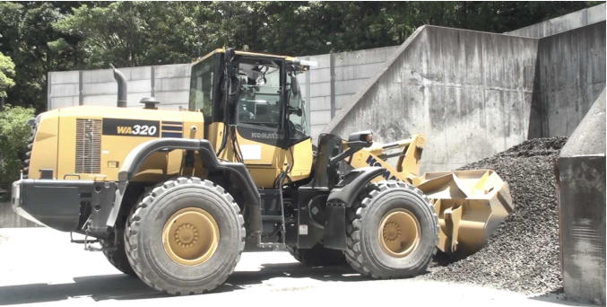
100 Hz의 샘플링 주파수로 측정 데이터를 수집하면서 여러 적재 작업을 수동으로 수행하였다. 본 연구에서는 표 1에 열거하고 그림 2에 나타낸 물리량에 초점을 맞춘다. 이산 측정도 수행하였다. 기록된 각 적재 작업 전에 2D 레이저 스캐너로 토사 더미 표면의 형상을 취득하였다. 각 적재 작업 후에는 검증된 내장 기능을 사용하여 버킷에 적재된 질량을 추정하였다. 순간 동력 소비량은 견인 동력과 리프트 및 틸트 실린더가 한 일의 시간 변화율의 합, 즉 P equiv P_tr + P_l + P_t = f_trv + f_l dotd_l + f_t dotd_t로 계산한다. 보고된 순 기계적 일은 이를 시간에 대해 적분한 값이다. 이때 가해진 일에는 엔진, 변속기 또는 유압장치에서 발생하는 기계적 손실이 포함되지 않는다는 점에 유의한다.
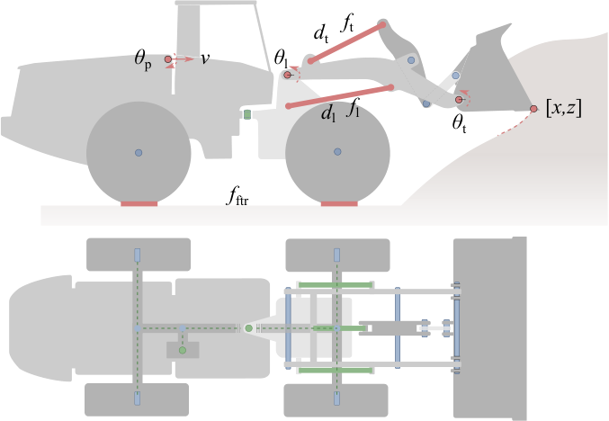
| 변수 | 기호 | 단위 | 설명 |
|---|---|---|---|
| 리프트 힘 | f_l |
arb.u. | 실린더 압력으로부터 계산 |
| 틸트 힘 | f_t |
arb.u. | 실린더 압력으로부터 계산 |
| 견인력 | f_tr |
arb.u. | 유압 모터의 압력과 용량으로부터 계산 |
| 주행 속도 | v |
km/h | 바퀴 회전으로부터 계산 |
| 리프트 신장량 | d_l |
arb.u. | 피스톤 위치로부터 계산 |
| 틸트 신장량 | d_t |
arb.u. | 피스톤 위치로부터 계산 |
| 붐 각도 | theta_l |
degrees | 섀시 피치를 기준으로 한 각도형 전위차계 측정값 |
| 버킷 각도 | theta_t |
degrees | 섀시 피치를 기준으로 한 각도형 전위차계 측정값 |
| 섀시 피치 | theta_p |
degrees | 지면을 기준으로 한 타이어 변형으로부터 계산 |
| 차량 위치 | m | 토사 더미 뒤쪽 수직 벽까지 레이저로 스캔한 거리 | |
| 버킷 위치 | [x,z] |
m | 차량, 붐 및 버킷의 자세로부터 계산 |
시뮬레이션과 비교하기 위해 세 가지 적재 작업을 선정하였다. 이들은 표 2에 열거한다. FB35라는 시험에서는 버킷을 지면에 수평이 되도록 내린 뒤 토사 더미 깊숙이 밀어 넣어 채웠다. 버킷을 20^ circ 기울인 후 휠 로더를 후진시켰다. 토사 더미에서 이탈한 후에는 마지막으로 버킷을 끝까지 기울였다. 관입 단계에서는 최대 견인력이 필요할 때 바퀴가 미끄러지는 것을 방지하기 위해 붐 리프트를 약간 증가시켰다(t = 3.5 s부터 시작). 적재가 완료된 후 버킷 내 토사의 중량은 3.46 tonnes로 추정되었고, 가해진 기계적 일은 209 kJ이었다. HD27 시험에서는 관입 단계 중간(t = 1.5와 t = 2.5 s 사이)에 붐을 올리고, 이탈 중에 버킷을 끝까지 기울였다. 적재 질량은 2.70 tonnes였고, 순 일은 127 kJ이었다. RD21 시험은 버킷 끝을 지면에서 0.25 m 위로 올린 상태에서 저속으로 얕게 관입한 것이 특징이다. 버킷을 채우는 동안 버킷을 단계적으로 기울였다. 이 작업으로 적재 질량은 2.10 tonnes, 기계적 일은 112 kJ이 되었다. 세 적재 작업의 측정값은 시뮬레이션 측정값과 함께 그림 6 및 그림 7에 제시한다. 이 작업들은 정격 하중 달성을 목표로 하지 않고 서로 다른 궤적을 시도한 결과임에 유의한다.
| 시험 | 질량 [tonne] | 일 [kJ] |
|---|---|---|
| FB35 | 3.46 |
209 |
| HD27 | 2.70 |
127 |
| RD21 | 2.10 |
112 |
제4절의 적재 시나리오를 위한 시뮬레이터를 만들었다. 시뮬레이터에는 휠 로더, 강체 평지, 토사 더미가 포함된다. 차량은 마찰 접촉과 동력전달계 동역학을 갖는 3차원 강체 다물체 시스템으로 모델링한다. 토사에는 서로 다른 두 가지 유형의 모델인 D형과 G형을 사용하며, 각 유형에는 서로 다른 네 가지 시공간 해상도가 있다. 서로 다른 여덟 가지 시뮬레이터 충실도 수준의 주요 설정을 표 3에 정리했으며, 여기에는 대표 입자 직경 D, 시간 간격 Δt, 입자 수 Nₚ, solver 반복 횟수 Nᵢₜ(5.3절에서 설명)가 포함된다. 여덟 시뮬레이터의 화면 캡처를 그림 3에 제시하며, 보충 동영상 2는 그 변화 과정을 보여준다. D형 시뮬레이터에서는 시간 음해석 적분을 사용하는 이산요소법(DEM)으로 더미 전체를 입자로 모델링하여, 입자-버킷 접촉력을 통해 차량 동역학과 강하게 결합한다. 이러한 시뮬레이션은 계산 집약적이며, 특히 토사를 다수의 작은 입자로 세밀하게 이산화할 때 그러하다. G형 시뮬레이터에서는 토사의 작은 일부, 즉 버킷 내부와 전방의 활성 영역만 입자로 이산화하는 축소형 다중스케일 방법을 사용한다. 입자 시스템의 거시적 동역학은 차량 동역학에 다시 결합되는 강체 응집체로 근사한다. G형 시뮬레이터는 계산 효율이 훨씬 높아서 격자 크기를 충분히 크게 설정하면 실시간 또는 그보다 빠르게 실행되지만, 더 큰 모델 오차가 수반되는 것으로 추정된다. 시뮬레이션은 [39] 및 [37]에 기술된 방법과 물리 엔진 AGX Dynamics [1]를 사용하여 수행했다. 자세한 내용은 다음 하위 절들에서 설명한다.
| 충실도 수준 | D [mm] | Δt [ms] | Nₚ | Nᵢₜ |
|---|---|---|---|---|
| D50 | 50 | 2 | 450,000 | 200 |
| D100 | 100 | 5 | 55,000 | 100 |
| D200 | 200 | 10 | 6,100 | 500 |
| D400 | 400 | 20 | 800 | 15 |
| G50 | 50 | 5 | ≲ 28,000 | 50 |
| G100 | 100 | 10 | ≲ 3,500 | 25 |
| G200 | 200 | 20 | ≲ 480 | 15 |
| G400 | 400 | 50 | ≲ 55 | 10 |
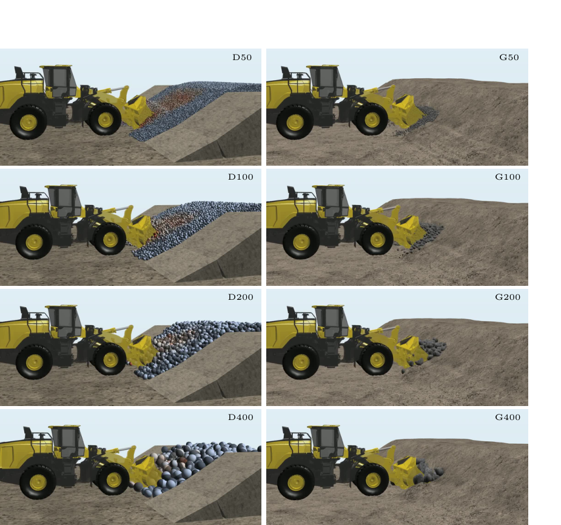
차량과 토사를 모델링하기 위해 [28]에서 도입되고 AGX Dynamics [1]가 지원하는 기술자 형식의 비매끄러운 접촉 다물체 동역학을 사용한다. 구체적으로, 강체와 관절, 모터, 마찰 접촉 및 충격을 위한 다양한 유형의 운동학적 구속조건으로 구성되는 최대 좌표 표현을 사용한다. 지배방정식은 다음과 같다.
M v̇ = f + Gⱼᵀ λⱼ + G꜀ᵀ λ꜀ 식 (5)
εⱼ λⱼ + ηⱼ gⱼ + τⱼ Gⱼ v = uⱼ 식 (6)
λₘᵢₙ ≤ λⱼ ≤ λₘₐₓ 식 (7)
contact_law(g꜀, v꜀, λ꜀) 식 (8)
여기서 시스템 질량 행렬은 M ∈ ℝ^(6Nᵦ×6Nᵦ), 외력은 f ∈ ℝ^(6Nᵦ), 속도는 v ∈ ℝ^(6Nᵦ)이며, 속도는 세계 좌표계 최대 좌표 x ∈ ℝ^(7Nᵦ)의 시간 미분이다(자세에는 사원수를 사용한다). 뉴턴-오일러 운동방정식 (1)의 구속력은 라그랑주 승수 λ와 야코비안 G로 표현하며, j로 표시한 관절 및 모터와 c로 표시한 접촉으로 구분한다.
식 (2)는 일반적인 구속조건 방정식이다. 이상적인 관절은 εⱼ = τⱼ = uⱼ = 0으로 나타낼 수 있으며, 이 경우 식 (2)는 홀로노믹 구속조건 gⱼ(x) = 0을 표현한다. 비이상적 관절은 유한한 컴플라이언스 εⱼ와 점성 감쇠율 τⱼ를 사용하여 모델링한다. 선형 또는 각운동 모터는 목표 속도 uⱼ(t)를 갖는 속도 구속조건 Gⱼv = uⱼ(t)로 나타낼 수 있으며, 이는 εⱼ = ηⱼ = 0 및 τⱼ = 1에서 도출된다. 모터 구속력의 범위 한계는 식 (3)으로 부과할 수 있다. 구속되고 구동되는 자유도가 Nⱼ개이면 λⱼ ∈ ℝ^(Nⱼ) 및 Gⱼ ∈ ℝ^(Nⱼ×6Nᵦ)이다.
접촉 법칙은 접촉 승수 λ꜀ ∈ ℝ^(3N꜀)와 상대 접촉 속도에 대한 부등식 및 상보성 조건으로 부과한다. 각 접촉 승수는 법선 성분과 접선 성분으로 λ꜀ = [λₙ; λₜ]와 같이 분할하며, 이 성분들은 쿨롱 법칙 |λₜ| ≤ μₜλₙ, 비관입 상보성 조건 0 ≤ ε꜀⁻¹gₙ + γ꜀Gₙv ⟂ λₙ ≥ 0, 무미끄럼 조건 ‖Gₜv‖(μₜλₙ − ‖λₜ‖), 그리고 최대 소산 조건 ‖Gₜv‖‖λₜ‖ = −(Gₜv)ᵀλₜ을 따라야 한다. 여기서 gₙ은 접촉 간극 함수이고, 법선 야코비안은 Gₙ = ∂gₙ/∂x이며, 접촉 컴플라이언스는 εₙ, 감쇠는 γₙ이다. 또한 접선 야코비안 Gₜ는 접촉하는 물체의 접촉 접평면 내 상대 속도가 Gₜv로 주어지도록 정의한다.
식 (4)의 활성 접촉 집합은 법선 간극 중첩량을 g꜀에 저장하고 접촉 속도를 v꜀ ≡ G꜀v = [Gₙᵀ, Gₜᵀ]ᵀv로 정의하며, 충돌 검출 알고리즘을 사용하여 매 시뮬레이션 시간 간격마다 다시 계산한다. 고속 충격은 다른 모든 운동학적 구속조건을 보존하면서 뉴턴 충격 법칙을 사용하여 모델링한다. DEM 물체(토사 입자)의 경우 접촉 모델을 Hertz 모델에 대응시키며, 실제 입자는 비구형인 반면 시뮬레이션 입자는 구형이라는 점의 영향을 포착하기 위해 구름 저항 구속조건을 포함한다. 접촉 모델과 야코비안의 대응 및 매개변수화에 관한 자세한 내용은 [39, 46, 37]에서 확인할 수 있다.
동역학 시스템은 SPOOK 스테퍼 [28]를 사용하여 시간 적분한다. 이는 비이상적 구속조건과 비매끄러운 동역학을 갖는 다물체 시스템의 고정 시간 간격 실시간 시뮬레이션을 위해 특별히 개발된 1차 정확도의 이산 변분 적분기이다. 혼합 상보성 문제(MCP)를 구성하는 시간 이산 방정식은 AGX [1]의 직접-반복 분할 solver를 사용하여 푼다. 피벗팅을 사용하는 블록 희소 LDLᵀ solver [29]를 차량 시스템과 그 외부 접촉에 대한 직접 solver로 사용하며, 쿨롱 마찰 모델을 선형화한다. DEM 방정식은 투영 가우스-자이델(PGS) 알고리즘을 사용하여 풀며, 이 알고리즘은 병렬 처리를 위한 영역 분할과 웜 스타팅을 사용하여 가속한다 [45]. 후자는 쿨롱 법칙을 선형화하지 않고 접촉 문제를 푼다.
차량 시뮬레이션 모델은 4.1절에서 소개하고 그림 2에 나타낸 Komatsu WA320-7 휠 로더의 주요 기하학적 치수와 질량 분포에 부합한다. 이 모델은 강체 10개, 힌지 조인트 10개, 프리즘 조인트 3개로 구성된다. 질량 및 기하학적 특성은 제조사가 제공한 3D 모델과 기하학적 정보를 바탕으로 결정하였다. 리프트 및 틸트 유압 실린더는 서로 독립적인 선형 모터로 모델링하며, 식식 (6)을 통해 속도 구속조건으로 도입한다. 실린더는 순간 목표 속도와 제조사 사양에서 도출한 최대 힘을 할당하여 제어한다. 그 결과로 나타나는 액추에이터 속도와 가해지는 힘은 동적 상태에 따라 달라지며 다물체 동역학 솔버가 계산한다.
차량 모델에는 최소한의 구성만 갖춘 구동계 모델을 장착하였다. 엔진은 회전 속도에 따라 달라지는 토크 한계를 갖는 힌지 모터 구속조건으로 모델링한다. 설정된 목표 주행 속도는 목표 모터 속도로 변환된다. 회전 운동은 주 구동축과 차동장치를 통해 바퀴로 전달된다. 타이어-지면 접촉의 선형 탄성계수는 1.0 MPa, 표면 마찰계수는 2.0으로 설정하였다. 탄성값은 버킷 적재 중 실험에서 관찰된 타이어 변형과 가장 잘 부합하는 값으로 정하였다. 마찰계수는 보정 실험에서 버킷 적재 중 타이어 미끄러짐을 유발하지 않는 값 가운데 가장 낮은 값으로 정하였다. 거친 표면 위 타이어의 마찰계수가 1보다 큰 것은 드문 일이 아니다. 조인트와 유압 실린더의 내부 마찰은 굴착력에 비해 무시할 수 있다고 가정하여 모델링하지 않았다.
D형 시뮬레이터에서는 토사 더미 전체를 입자로 이산화하며, 이 입자들은 3절에서 설명하고 [39] 및 [46]에서 더 상세히 다룬 비평활 이산요소법(DEM)을 사용하여 시뮬레이션한다. 토사 더미는 현장 시험과 같은 형상의 전면을 갖는 폭 6 m의 용기 안으로 입자를 방출하여 생성한다. 입자는 구형으로 설정하며, 고유 질량밀도는 2590 kg/m^3, 마찰계수는 0.3, 구름저항계수는 0.02, 반발계수는 0으로 설정한다. 이 설정은 현장 시험의 벌크 질량밀도 1727 kg/m^3와 안식각 32^ circ에 부합하며, [39]에서 사전 보정한 토양 가운데 가장 잘 맞는다.
각 현장 시험에 대해 입자 크기 D = 50, 100, 200, 및 400 mm를 사용하여 세 개의 토사 더미를 생성하였다. 규칙적인 충전 구조가 형성되는 것을 방지하기 위해 입자 직경을 D pm 0.1D의 좁은 크기 범위에서 균일 크기분포를 이루도록 약간 교란한다. 비평활 이산요소법(DEM)에서 계산 시간은 N_pN_it/Δ t propto D^3.5에 비례한다. 공간 해상도에 대한 이처럼 강한 의존성은 특성 크기가 L이고 중력가속도가 g인 입상 시스템을 SPOOK 스테퍼와 투영 Gauss-Seidel(PGS) 솔버로 시뮬레이션할 때 오차 허용치 epsilon을 달성하기 위한 경험 법칙 N_it gtrsim 0.1 (L/D)/ epsilon 및 Δ t lesssim sqrt2 epsilon D/g에서 비롯된다 [39].
G형 시뮬레이터는 [37]에서 설명하고 그림 4에 나타낸 변형 가능 지형용 멀티스케일 모델을 사용한다. 이 모델은 전체 이산요소법(DEM) 모델을 대폭 축약하여 근사한 것으로 이해할 수 있다. 차량의 관점에서 보면, 활성 토양 영역은 정지 상태인 주변 지형과 접촉 지지를 이루는 하나의 강체로 대체된다. 차량과 토양 집합 입자 강체의 연성 동역학은 식식 (5)--식 (8)을 사용하여 모델링하고 직접 솔버를 통해 높은 정확도로 푼다.
활성 구역 내부의 지형 변형은 차량을 운동학적 강체로 표현하는 공동 시뮬레이션 토양 동역학 모델로 처리한다. 절차는 다음과 같다. 지형 표면은 높이맵으로 표현한다. 그 초기 형상은 현장 시험에서 스캔한 토사 더미로부터 재구성한다. 고체상에서 토양은 질량 점유율과 다짐도의 상태가 가변적인 복셀의 규칙 격자를 사용하여 표현한다. 토양에는 공칭 원지반 상태에서의 물리적 거동을 나타내는 일련의 벌크 역학 매개변수를 할당한다. 버킷이 지형 표면과 접촉하면 활성 토양 운동 구역을 예측한다. 이 구역은 버킷의 절삭날에서 토양 표면까지 뻗어 토양 쐐기를 둘러싸는 전단 파괴면으로 이루어진다. 파괴각은 토양의 내부 마찰과 버킷 절삭면의 방향에 따라 달라진다. 활성 구역 내부에서 토양은 주로 입자로 표현하며, 움직이는 버킷과 함께 활성 구역이 지형 안팎으로 진행함에 따라 입자의 크기와 개수가 증가하거나 감소할 수 있다.
입자 동역학은 설정된 벌크 매개변수와 일관된 벌크 역학적 거동을 보장하는 고유 질량밀도와 접촉 매개변수를 사용하여 이산요소법(DEM)으로 모델링한다. 입자는 버킷이 차량 다물체 시뮬레이션으로 제어되는 운동학적 이동 강체로 존재하는 공동 시뮬레이션에서 변화한다. 토양이 버킷에 가하는 반력은 활성 구역 입자들의 순간 형상, 관성 및 운동량을 이어받는 집합 입자 강체를 통해 전달된다. 토양의 내부 마찰은 집합 입자-지형 접촉면(그림 4의 B)에 적용하며, 집합 입자-버킷 접촉면(그림 4의 A)에는 별도의 매개변수를 설정할 수 있다.
집합 입자 강체의 역할은 기본 토공 방정식에서 설명하는 토양 분리력을 다물체 동역학으로 일반화한 것으로 볼 수 있다 [32]. 집합 입자 강체는 관성 효과를 포착할 뿐만 아니라, 응력이 크고 공간 및 시간 해상도가 낮은 경우에도 안정적인 반력과 토양 변위율을 제공하는 수치 필터링 효과를 낸다. 이러한 이유로 이산요소법(DEM)에 대해 5.3절의 관계식이 예측하는 것보다 더 큰 시간 간격과 더 적은 PGS 솔버 반복 횟수로 시뮬레이션할 수 있다.
응력을 받는 조밀한 토양에 버킷 이빨이나 날이 관입할 때 발생하는 추가 저항은 관입 구속조건(그림 4의 C)으로 모델링한다. 이 구속조건은 관입 저항력이 버킷 형상과 토양-버킷 표면 마찰계수의 함수인 임계값을 초과하지 않는 한 절삭 방향으로 이루어지는 버킷의 운동을 방해한다.
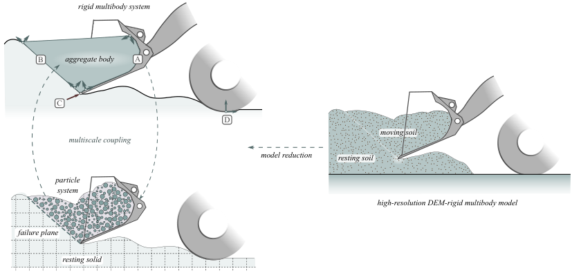
지형 모델에는 현장 시험장의 자갈에서 관찰된 특성과 가장 잘 부합하는 벌크 매개변수를 할당하였다. 질량밀도는 1727 kg/m^3, 내부 마찰각은 32^ circ, 팽창각은 8^ circ, 영률은 4.6 MPa이다. 팽창은 전단 변형에 의해 유발되는 입상 매질의 체적 증가이다. 팽창은 내부 마찰에 직접 더해져 재료가 전단 파괴에 더 잘 저항하게 하며, 즉 본 사례에서는 유효 내부 마찰각이 합계 40^ circ가 된다. 버킷 절삭날의 최대 및 최소 반경은 각각 10 mm와 2.5 mm로, 등가 이빨 길이는 10 mm로 설정하였다. 시뮬레이션 굴착력과 측정 굴착력이 가장 잘 부합하도록 두 매개변수를 보정하였다. 버킷과 토양 사이의 마찰계수는 0.2로 설정하였다. 이른바 집합 입자 강성 배율은 0.01로 설정하였다. 이에 따라 집합 입자-지형 접촉면의 접촉 탄성은 설정한 토양 영률에 비해 5배 증가한다.
그림 5와 보충 동영상 3에서는 G200 시뮬레이터를 사용한 HD27 시험의 전개를 해상도가 가장 높은 D50 시뮬레이터를 사용한 경우와 비교한다. 두 시뮬레이터는 입자 수에서 10^3배, 계산 속도에서 10^4배 차이가 난다. 그럼에도 G200 활성 구역과 운동이 유발된 D50 입자의 전개 및 이탈 후 버킷 내부의 토양 분포는 서로 잘 일치한다. 토양 모델과 시공간 해상도의 차이는 차량 자세에 작은 편차를 만든다. 이는 영상에서 약간의 이중상으로 나타난다.
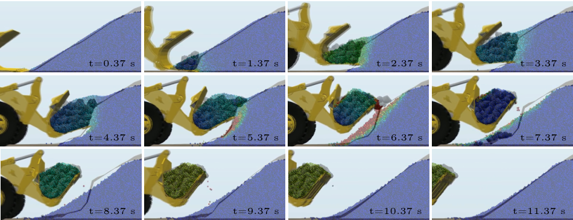
0.37 s부터 1초 간격으로 D50 및 G200 시뮬레이터의 영상을 중첩하여 나타낸 HD27 시험 시뮬레이션. D50 입자는 속도에 따라 색상으로 구분하여 0은 파란색, 1 m/s는 빨간색으로 나타냈으며, G200 입자는 회색으로 나타냈다. 활성 구역의 형상과 버킷 내 질량 분포가 서로 잘 일치한다.충실도 수준이 서로 다른 시뮬레이터의 현실 격차를 평가하기 위해, 목표 속도 시계열을 입력으로 사용하여 전진 구동, 붐 리프트 및 버킷 틸트 액추에이터를 feedforward control하는 방식으로 현장 시험의 적재 사이클을 반복하였다. 운전자가 조작한 차량의 운동을 가장 잘 재현하는 목표 속도 제어 신호는 실시간으로 실행되는 G200 시뮬레이터를 사용하여 식별하였다. 이 단계에서는 바퀴-지면 마찰계수, 버킷-지형 마찰계수 및 집합 입자 강성 배율도 앞 절에 열거한 값으로 보정하였다. 다음으로, 식별된 feedforward control 신호(액추에이터 목표 속도)를 각 시뮬레이터를 실행할 때 입력으로 사용하였다.
시뮬레이션과 현장 시험에서 측정한 시계열은 표 1에 열거한 관측 변수를 사용하여 비교하였다. 힘 측정값은 차량의 특성을 나타내는 힘 상수로 나누어 재조정하였다. 차량이 토사 더미에 도달하기 전에 목표 속도로 초기화하는 단계와 버킷이 끝점에 도달한 이후의 단계는 제외하였다. 이 단계들은 그림 7에서 회색으로 표시한다.
스칼라 신호에는 MAE 오차를 계산하였고, 버킷 끝단 trajectory에는 DTW 오차를 사용하였다. 각 변수와 D형 및 G형 시뮬레이터의 오차는 각각 표 4와 표 5에 제시한다. 이 표들에는 적재 질량의 상대 오차 E_M = (M - M)/M, 일의 상대 오차 E_W = (W - W)/W 및 각 시뮬레이터의 평균 오차도 포함한다.
| 시뮬레이션 | E_x |
E_v |
E_tr |
E_l |
E_t |
E_M |
E_W |
평균 |
|---|---|---|---|---|---|---|---|---|
| FB35-D50 | 0.0984290726953231 | 0.11951503267973856 | 0.09054086054117647 | 0.09478856205949525 | 0.09005927595411155 | -0.19942196531791906 | -0.22104865956333195 | 0.1305433469730137 |
| FB35-D100 | 0.038962859228437785 | 0.1217986928104575 | 0.0876039 | 0.09126940599975221 | 0.09929890804723426 | -0.15317919075144504 | -0.1958954526366044 | 0.1125726299248473 |
| FB35-D200 | 0.030417981961186984 | 0.12349607843137254 | 0.08383484310588234 | 0.10526514163296796 | 0.09620464397653464 | -0.15317919075144504 | -0.12146915202395875 | 0.10198100455476403 |
| FB35-D400 | 0.10431925820607055 | 0.13221895424836602 | 0.08245510929411765 | 0.09780620901361475 | 0.13227397255553 | -0.22254335260115607 | -0.15885699108756418 | 0.1329248352866313 |
| HD27-D50 | 0.02135554922763817 | 0.06039023297491039 | 0.13372297203225808 | 0.080630462606196 | 0.07612721554666167 | -0.05185185185185189 | 0.14451308484284967 | 0.08122733844033797 |
| HD27-D100 | 0.0213601243356781 | 0.05530421146953405 | 0.15528017812903225 | 0.07177338294082329 | 0.08918411380258753 | 0.01 | 0.1724440054465958 | 0.08182191764737978 |
| HD27-D200 | 0.0322783392122853 | 0.06749955197132616 | 0.1444594413548387 | 0.11896736382199787 | 0.1570576880630336 | -0.07037037037037051 | 0.04078550198781434 | 0.09020260811166664 |
| HD27-D400 | 0.048559035108356366 | 0.05896146953405018 | 0.12536466341935484 | 0.11199778541349563 | 0.17976022198124478 | 0.01 | -0.161791641700927 | 0.09912031779497658 |
| RD21-D50 | 0.012528074647773047 | 0.04260069444444444 | 0.08126807168333333 | 0.07797139354731174 | 0.0908074627741182 | -0.2571428571428572 | -0.24617034486958836 | 0.11549841415848949 |
| RD21-D100 | 0.024386760790202213 | 0.04635902777777778 | 0.08766865703333333 | 0.10239618462443606 | 0.1303768297658559 | -0.31428571428571433 | -0.24802531806674477 | 0.13621407033486632 |
| RD21-D200 | 0.016434236157349975 | 0.04225717592592593 | 0.0709763076 | 0.10138110727829118 | 0.14969864882557612 | -0.26666666666666666 | -0.31447760463321395 | 0.1374131067267177 |
| RD21-D400 | 0.08109005161147588 | 0.06290925925925926 | 0.12060800675000001 | 0.15993641384988647 | 0.19822033921430907 | -0.30000000000000004 | -0.6064709050298827 | 0.21846213938783046 |
| 시뮬레이션 | E_x |
E_v |
E_tr |
E_l |
E_t |
E_M |
E_W |
평균 |
|---|---|---|---|---|---|---|---|---|
| FB35-G50 | 0.10699366820521247 | 0.15669150326797385 | 0.07778662552941176 | 0.08560283928660092 | 0.13265650002704077 | -0.05202312138728328 | 0.0 | 0.08767990742773625 |
| FB35-G100 | 0.04043118467455896 | 0.14465947712418298 | 0.07024259188235295 | 0.08746483116171239 | 0.14150370466077888 | 0.0 | 0.012809735763695616 | 0.07101593218104024 |
| FB35-G200 | 0.06317120206355442 | 0.11956535947712416 | 0.09248907889411764 | 0.09250077918629336 | 0.14845120796254432 | 0.0 | -0.06649952065467214 | 0.08365247452124437 |
| FB35-G400 | 0.192901540191246 | 0.24227450980392154 | 0.09260705629411764 | 0.12200991414007592 | 0.15399549037135057 | -0.12427745664739889 | -0.1166175405777291 | 0.14924050114654852 |
| HD27-G50 | 0.0692881976831618 | 0.077790770609319 | 0.1888542342903226 | 0.15559023185734208 | 0.11573295196934004 | 0.1888888888888888 | 0.3288172665134629 | 0.16070893454454815 |
| HD27-G100 | 0.04983482775013134 | 0.07474327956989246 | 0.12612839729032257 | 0.10998516408543665 | 0.10404540463157487 | 0.14444444444444432 | 0.13173879105622233 | 0.1058457584040035 |
| HD27-G200 | 0.031110596895203006 | 0.06993996415770608 | 0.11707769651612901 | 0.08992744210660007 | 0.10200279703497421 | 0.13333333333333328 | 0.0 | 0.07786314538954257 |
| HD27-G400 | 0.11451548475710817 | 0.07208109318996415 | 0.09635041572580645 | 0.08543513656509444 | 0.11037802970927076 | 0.040740740740740695 | -0.15296750963401795 | 0.09606691576028607 |
| RD21-G50 | 0.04804311606248851 | 0.04505625 | 0.15760849415 | 0.06586031907714057 | 0.0714329112925322 | 0.09999999999999998 | 0.15690007482941223 | 0.09212873791593905 |
| RD21-G100 | 0.05895020804371135 | 0.04627337962962962 | 0.13807587921666667 | 0.05226327906510219 | 0.07718033610387609 | 0.10952380952380951 | -0.0319564745569417 | 0.07346048087710529 |
| RD21-G200 | 0.10023972806414042 | 0.04349907407407407 | 0.10323973708333334 | 0.05612970662439717 | 0.07049128003833481 | 0.20476190476190462 | -0.20066992601405145 | 0.11129019380860512 |
| RD21-G400 | 0.2145978328882501 | 0.04247453703703703 | 0.16273347025 | 0.09557448287902533 | 0.07719323307963476 | 0.3095238095238095 | -0.3083002450868257 | 0.17291394439208319 |
그림 6에 나타낸 시뮬레이션의 버킷 끝단 trajectory 대부분은 실험 결과와 상당히 잘 일치한다. DTW 오차(표 4 및 표 5의 E_x)는 평균적으로 D형 시뮬레이터에서 0.04, G형 시뮬레이터에서 0.09이다. 전반적인 경향은 가장 거친 해상도(D400 및 G400)에서 버킷이 지나치게 깊이 관입한다는 것으로, 이는 큰 시간 간격으로 인해 접촉 중첩이 커지기 때문인 것으로 추정된다. 예외는 RD21-D400 사례로, 과도하게 큰 입자들이 서로 맞물리기 때문에 버킷이 토사 더미 표면을 관입하는 데 심각한 방해를 받는다. FB35-D400과 HD27-D400에서 이것이 문제가 되지 않는 이유는 버킷이 입자들이 놓여 있는 지면을 따라 관입하기 때문이다. 버킷을 입자 직경의 절반만큼 들어 올렸다면 RD21-D400과 마찬가지로 버킷이 관입에 방해를 받았을 것이다.
입자가 더 미세한 D50–D200 토사 더미에서는 과도한 관입 저항의 뚜렷한 징후가 없다. G형 시뮬레이터는 설계상 공간 이산화에 대해 이러한 민감성을 갖지 않는다. 버킷의 절삭날은 어디에 위치하든 파괴면(그림 4)을 유발하며, 관입 저항은 복셀 격자의 위치와 해상도에 의존하지 않는다.
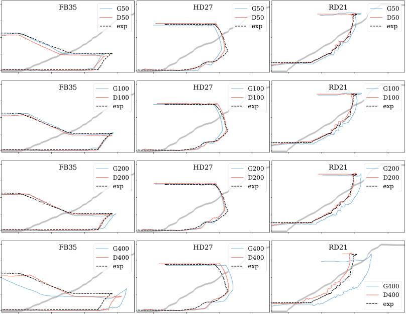
그림 7에 제시한 스칼라 시계열 측정값을 살펴보면, 주행 속도와 버킷 및 붐의 회전은 시뮬레이션과 실험 간에 상당히 잘 일치한다. G400 시뮬레이터의 편차가 가장 크다는 점이 두드러진다. 견인력 MAE(표 4 및 표 5의 E_tr)는 8%에서 19% 사이이며, 주행 장치, 붐 및 버킷을 동시에 작동할 때(HD27 및 RD21) 오차가 가장 크다. 시뮬레이션된 붐 리프트력과 버킷 틸트력의 추세는 실험에서 측정한 추세와 일치하지만, 때때로 상당한 편차가 나타난다. 리프트력과 틸트력의 편차는 FB35 시험에서는 약 7 s, RD21 시험에서는 약 14 s의 돌파 시점에 가장 크지만, 약 8 s에 돌파가 발생하는 HD27 시험에서는 그렇지 않다. 돌파 후에는 시뮬레이션과 실제 리프트력이 잘 일치하며, 이는 버킷이 기계적 끝점에 도달하여 힘이 재분배되는 시점까지 버킷 채움이 잘 일치함을 나타낸다. 이 현상은 FB35에서는 약 10 s, RD21에서는 약 14.5 s에 발생한다.
평균적으로 리프트력과 틸트력의 오차(표 4 및 표 5의 E_l 및 E_t)는 모두 평균 11%이며, D400과 D200의 경우를 제외하면 D형 시뮬레이터가 G형 시뮬레이터보다 약간 작다. 차체 각도의 상대 오차는 크고 가장 거친 시뮬레이터에서 최대이지만, 절댓값으로는 작다. 가능한 원인은 타이어 압력의 모델 오차이거나, 시뮬레이션에서는 평탄하다고 가정한 지면이 완전히 평탄하지 않았기 때문일 수 있다.
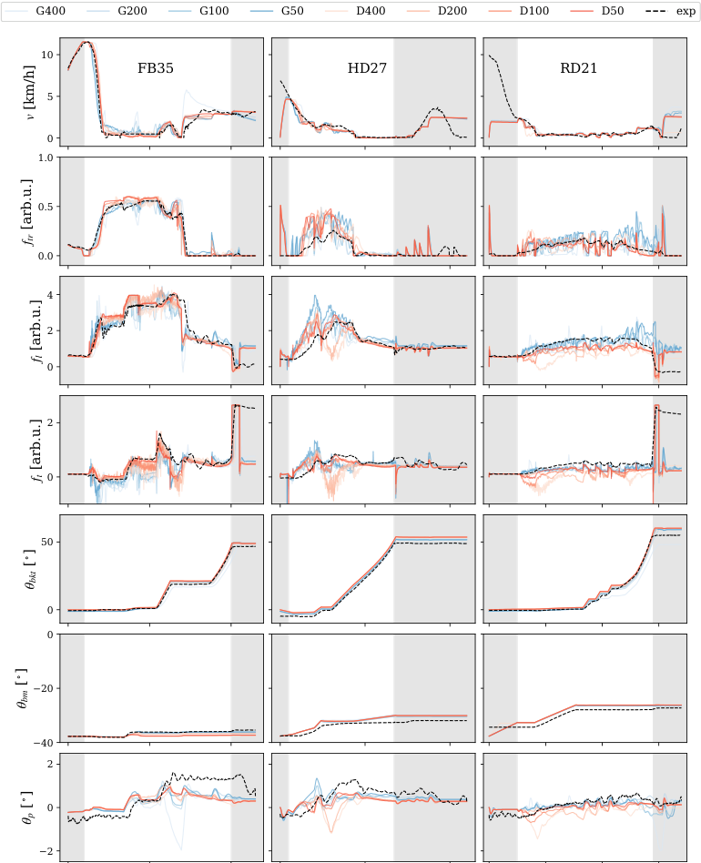
적재 질량과 일의 상대 오차는 표 4 및 표 5에 열거한다. D형 시뮬레이터에서는 적재 질량을 과소평가하며 평균 오차는 15%이고, G형 시뮬레이터에서는 대부분 과대평가하며 평균 오차는 12%이다. 누적 일의 경우 각각의 평균 오차는 17%와 21%이다. 마찬가지로 D형 시뮬레이터는 대부분 일을 과소평가하는 반면, G형 시뮬레이터는 대부분 과대평가한다. 그림 8에는 주행, 리프트 및 틸트 작동이 각각 기여하는 동력 소비의 시계열 예를 제시한다. 동력은 주행에 가장 많이 소비되고, 그다음으로 틸트에 많이 소비된다. 두 시뮬레이터 유형 모두 현장 시험과 유사한 동력 소비 추세를 보인다.
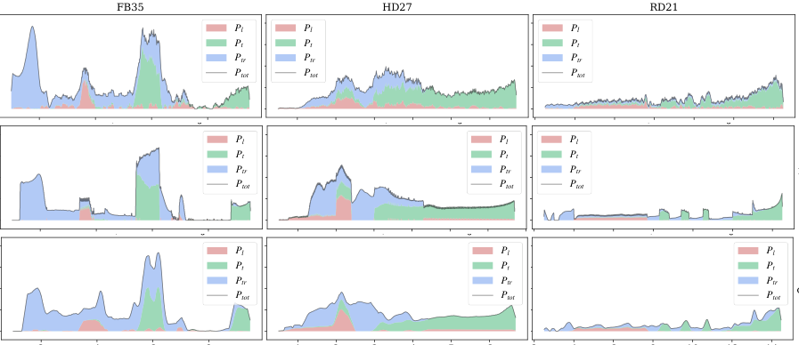
각 시험과 시뮬레이터 충실도에 대한 평균 오차를 계산하였다. 이 값들은 표 4 및 표 5의 맨 오른쪽 열에 열거하고 그림 9(a)에 도시하였다. 이 값은 시뮬레이터의 현실 격차를 포착하기 위한 것이므로 이를 sim-to-real 오차라고 지칭한다. 전체적으로 sim-to-real 오차는 약 10%이고 표준편차는 3%이다. 평균적으로 sim-to-real 오차는 해상도 척도(격자 및 입자 크기)가 커질수록 증가한다. G50의 경우를 제외하면 G형 시뮬레이터의 오차가 D형 시뮬레이터보다 다소 작다.
각 시뮬레이터를 현장 시험과 비교하지 않고 충실도가 가장 높은 시뮬레이터인 D50과 비교하면 그림 9(b)의 평균 sim-to-sim 오차를 얻는다. D형 시뮬레이터의 sim-to-sim 오차는 입자 크기에 따라 증가하는데, 이는 자기 일관성 오차이므로 예상할 수 있는 결과이다. 반면 G50–G400 시뮬레이터는 D50과 비교할 때 평균 15%의 오차만큼 차이가 난다.
표 3에 열거한 서로 다른 시간 간격, 입자 수 및 솔버 반복 횟수가 보여 주듯이, 시뮬레이터마다 계산 집약도와 속도가 크게 다르다. 실시간 계수(계산 시간을 시뮬레이션 시간으로 나눈 값)는 단일 Intel i7-8700K 3.70 GHz 프로세서를 탑재한 워크스테이션을 사용하여 측정하였다. 그 결과를 그림 9(c)에 제시한다. G형 시뮬레이터는 동일한 해상도의 D형 시뮬레이터보다 대략 100배 빠르며, G200은 실시간으로 실행되고 G400은 실시간보다 5배 빠르게 실행된다. G200 시뮬레이터는 sim-to-real 오차와 속도 간 절충에서 최적점으로 간주할 수 있다.
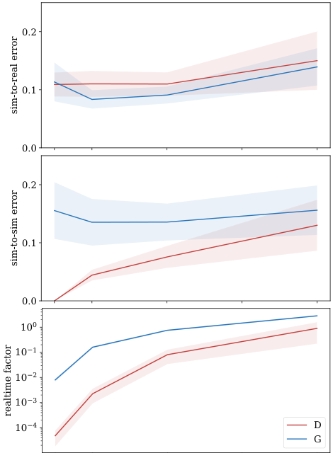
이 절에서는 자동 버킷 충전을 위한 제어기의 domain sensitivity를 조사한다. 시뮬레이션을 사용하여 제어 파라미터 공간 A를 탐색함으로써 준최적 성능을 내도록 조정할 수 있는 자유 파라미터 a in A를 갖는 제어기를 생각해 보자. 그러면 표적 domain으로 전이할 때 제어 파라미터 선택이 얼마나 민감한지가 관심 대상이 된다. 다시 말해, 시뮬레이션에서 준최적인 것으로 밝혀진 제어 파라미터가 현실에서도 준최적인가? 추가 현장 실험을 수행할 여건은 없었다. 대신 빠른 G200 시뮬레이터로 최적화한 제어기를 D50 시뮬레이터로 전이할 때 나타나는 domain sensitivity를 조사하였다. D50은 훨씬 더 미세하게 해상된 시뮬레이터이며 G200보다 10^4배 이상 느리다. 그림 9로부터, 편차의 성격은 다르지만 G200과 D50 사이의 격차가 시뮬레이션-현실 격차와 크기 면에서 유사하다는 것을 알 수 있다.
[3]에서 연구한 것과 동일한 force feedback controller를 자동 버킷 충전에 사용하고 FB35 시험 토사 더미에서 이를 실행하였다. 휠 로더는 토사 더미에서 5 m 떨어진 지점에서 출발하며, 토사 더미를 향해 직진하고 목표 속도는 8 km/h이며 버킷은 지면에 수평으로 낮춘 상태이다. 버킷이 토사 더미에 도달하면 리프트 및 버킷 실린더에 force feedback control 법칙을 적용하여, 버킷 끝단이 토사 더미에서 빠져나올 때까지 버킷을 채운다. 빠져나온 뒤 토사가 가라앉도록 장비를 0.5 s 동안 정지 상태로 유지한 다음, 붐과 버킷의 최종 각도가 각각 -20^ circ와 50^ circ에 도달하도록 리프트와 틸트를 수행하면서 목표 속도 8 km/h로 후진하기 시작한다. 장비가 출발 지점에 도달하면 적재 사이클이 끝난다.
Force feedback controller는 [12]의 어드미턴스 제어기를 변형한 것이다. 이 제어기는 붐 및 버킷 실린더용 선형 모터의 목표 속도를 결정한다. 선형 모터는 구속력에 힘 범위 한계를 둔 속도 구속조건으로 모델링된다는 점을 상기하면, 필요한 힘이 모터 한계 이내에 있지 않을 경우 설정한 목표 속도는 실현되지 않는다. 제어기는 다음 목표 속도로 정의한다. 즉, v_bm^target = u_bm(f_bm,a) v_bm^max 및 v_bk^target = u_bk(f_bm,a) v_bk^max이며, 여기서 f_bm은 적절히 정규화한 붐 실린더의 측정 힘이다. 응답 함수는 u_bm = clip(k_bm[f_bm- delta_bm],0,1) 및 u_bk = clip(k_bk[f_bm- delta_bk],0,1)이며, 여기서 clip(value, min, max)는 value를 최솟값과 최댓값 사이로 제한한다. 굴착 저항은 버킷이 토사 더미에 관입하는 깊이에 따라 증가한다. 붐 실린더 힘 f_bm을 통해 관측한 굴착 저항이 임계 파라미터 delta_bm 또는 delta_bk를 초과하면 각각 리프트 또는 틸트 작동이 개시된다. 임계 파라미터의 값이 클수록 일반적으로 더 깊이 관입하는 버킷 trajectory가 형성된다. 이득 파라미터 k_bm과 k_bk는 각각의 반응이 얼마나 빠른지를 조절한다. 이 파라미터들은 제어 파라미터 벡터 a = [ delta_bm, k_bm, delta_bk, k_bk]로 묶인다. 6절의 feedforward controller와 달리 적재 사이클을 완료하는 데 걸리는 시간은 전혀 알 수 없으며 제어 파라미터와 토사 더미 형상에 크게 좌우된다는 점에 유의해야 한다.
단순화를 위해 여기서는 4차원 제어 파라미터 공간 전체를 다루지 않는다. 대신 a_0 = [0.7, 0.3, 0.2, 0.2], a_1 = [0.0, 2.2, 0.15, 4.8], 탐색 파라미터 s in [0,1]인 탐색선 a(s) = a_0 + (a_1-a_0)s를 따라 스윕한다. 일반적으로 s approx 0이면 버킷이 토사 더미에서 빠져나오기 전에 깊이 관입하는 반면, s approx 1이면 표면을 따르는 더 얕은 trajectory가 형성된다. 서로 다른 제어 파라미터를 사용하는 시뮬레이션은 s를 0.0부터 1.0까지 스윕하여 실행하였으며, G200에는 등간격으로 나눈 50개 구간을, D50에는 30개 구간을 사용하였다. 시뮬레이터 충실도 수준에 대한 의존성을 확인하기 위해 G100 및 D100 시뮬레이션도 실행하였다. 예시는 보충 동영상 4에 제시한다.
제어 파라미터 및 시뮬레이터에 대해 측정한 적재 질량 M, 사이클 시간 T, 일 W를 그림 10에 나타낸다. 시뮬레이터들은 전반적으로 동일한 의존성을 보이지만 일부 차이도 나타난다. 질량, 시간 및 일은 s에 따라 단조 감소하며, 약간의 변동이 있고 그 변동은 D보다 G에서 더 크다. 적재 시간은 잘 일치하며, 버킷 관입이 깊어질 때 시간이 급격히 증가하는 양상을 포착한다. 일의 경우 거의 일정한 50 kJ의 격차가 있으며, G200이 D50보다 약 15% 큰 값을 산출한다. 질량의 경우 버킷 충전량이 최대인 s approx 0 영역에서 격차가 25%이며, s가 증가함에 따라 꾸준히 감소한다. 이 격차들은 feedforward control을 사용한 6절의 결과와 일치한다. 여기서는 해상도에 대한 의존성이 거의 두드러지지 않는다.
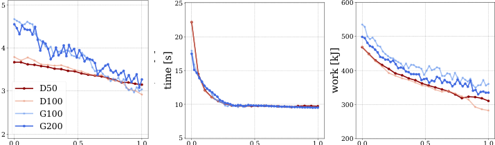
s에 대한 적재 질량 (a), 시간 (b), 일 (c)의 의존성. 해상도에 대한 민감성을 확인하기 위해 G100 및 D100도 함께 나타낸다.시뮬레이션한 각 적재 작업의 생산성과 효율은 각각 M/T와 M/W로 계산한다. 제어 파라미터 및 시뮬레이터 유형에 대한 이들의 의존성을 그림 11에 나타낸다. 앞서 언급한 격차로 인해 생산성의 절댓값은 다르지만 경향은 유사하다. s가 0에 가까워짐에 따라 적재 시간이 급격히 증가할 때 생산성도 유사한 양상으로 감소한다. D형 시뮬레이터는 효율이 s에 따라 단조 증가한다고 예측하는 반면, G형 시뮬레이터에서는 효율이 대체로 일정하다.
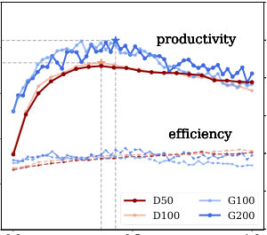
a(s)를 사용하는 force feedback control의 domain sensitivity.G200 시뮬레이터를 사용하여 최적 제어 파라미터를 선택하고 이를 D50 domain으로 전이하는 것이 과제였다면, 서로 다른 domain에서 domain gap뿐 아니라 최적 파라미터 값의 이동도 경험했을 것이다. 현재 예에서 G200의 최대 생산성은 s=0.42에서 약 416 kg/s인 반면, D50 시뮬레이션에서 관측한 최대 생산성은 s=0.36에서 366 kg/s이다. 이는 49 kg/s (13%)의 domain gap과 0.06의 domain 이동에 해당한다. G200에 최적인 제어 파라미터 s=0.42를 D50 domain으로 직접 전이한다면, 확인된 최적값 대비 성능 저하는 2%에 불과할 것이다. 이는 선택한 행동 공간의 특수한 사례일 수 있으므로, 추가로 10개의 공간에서도 domain sensitivity를 시험하였다. D50의 시뮬레이션 비용을 피하기 위해, 그림 11에 나타난 것처럼 D50과 D100 사이의 격차는 미미하다고 가정하여 추가 시험은 G200과 D100 사이에서 수행하였다. 그 결과 domain gap, domain 이동 및 성능 저하의 평균은 각각 55 kg/s (16%), 0.22 및 5%였다.
본 연구의 한계는 균질한 자갈을 적재하는 특정한 경우만을 다루었다는 점이다. 거칠게 파쇄된 암석이나 점착성 토사처럼 더 복잡하고 불균질한 토양을 고려하면 시뮬레이션-현실 격차가 더 커질 가능성이 있다. 반면, [15]의 결과는 다른 재료에 대한 적응이 극복할 수 없는 문제는 아님을 시사한다.
본 논문의 휠 로더 모델은 매우 단순화되어 있으며, 특히 엔진과 구동계를 통한 동력 전달, 그리고 붐 리프트 및 버킷 틸트용 유압 계통이 그러하다. 실제로 이들은 동일한 동력원을 공유하며 그 동력을 두고 경쟁한다. 시뮬레이션 시간 간격이나 속도에 영향을 미치지 않는 간단한 모델 확장 방법은 [38]의 모델을 도입하는 것이다. 그러나 보정해야 할 매개변수의 수는 증가할 것이다.
시뮬레이션-현실 격차가 10%인 전체 시스템 휠 로딩 시뮬레이터를 구축할 수 있음을 확인하였다. D형 시뮬레이터와 G형 시뮬레이터 사이의 도메인 민감도가 실제 현실 격차를 대표한다면, 이 정도의 시뮬레이션-현실 격차는 최적성을 크게 떨어뜨리지 않고 본 연구에서 검토한 힘 피드백 제어기를 전이하기에 분명히 충분하다. 관찰된 격차는 시뮬레이션 지형의 충실도 수준에 약하게 의존한다. 놀랍게도 축약된 멀티스케일 지형 모델은 자유도와 계산 속도에서 여러 자릿수 규모의 차이가 있음에도 DEM 모델과 같거나 더 우수한 현실성을 제공할 수 있다. 자유 모델 매개변수가 더 많다는 점은 높은 계산 속도로 상쇄되며, 이에 따라 보정 과정에서 훨씬 더 많은 평가를 수행할 수 있다. 연구 결과는 관찰된 시뮬레이션-현실 격차가 수치 오차보다 모델 오차에서 더 많이 기인함을 시사한다. 격차를 더 줄이기 위해서는 엔진, 붐과 버킷의 유압 구동, 그리고 유압 계통과 구동계 사이의 동력 분배를 더욱 정교하게 모델링할 것을 권고한다.
이 논문의 보충 데이터는 http://umit.cs.umu.se/wl-sim-to-real/에서 온라인으로 확인할 수 있다.
그림 7에는 비교하기 쉽도록 모든 시뮬레이터의 측정값을 하나의 그림에 모았지만, 그 대가로 많은 선이 서로 겹친다. 그림 12--그림 15에는 각 공간 해상도에 대한 측정값을 제시한다.
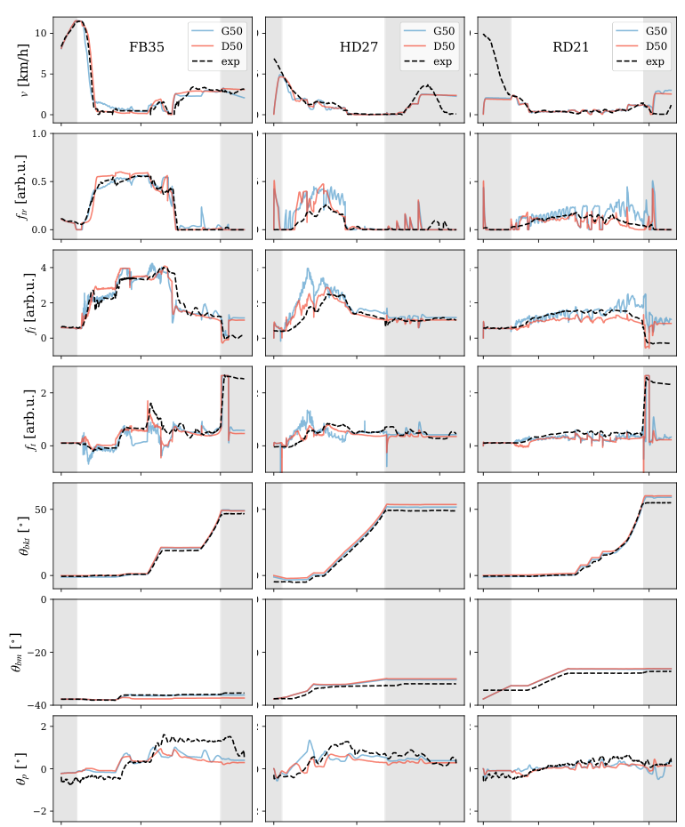
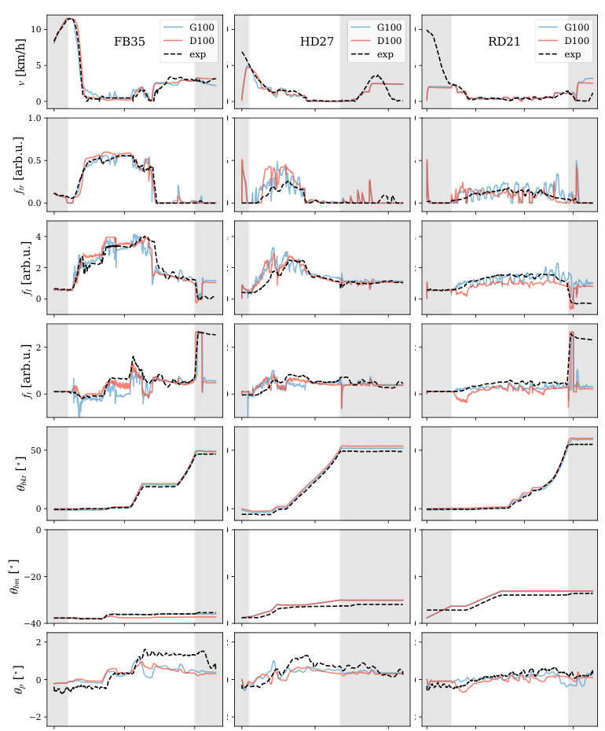
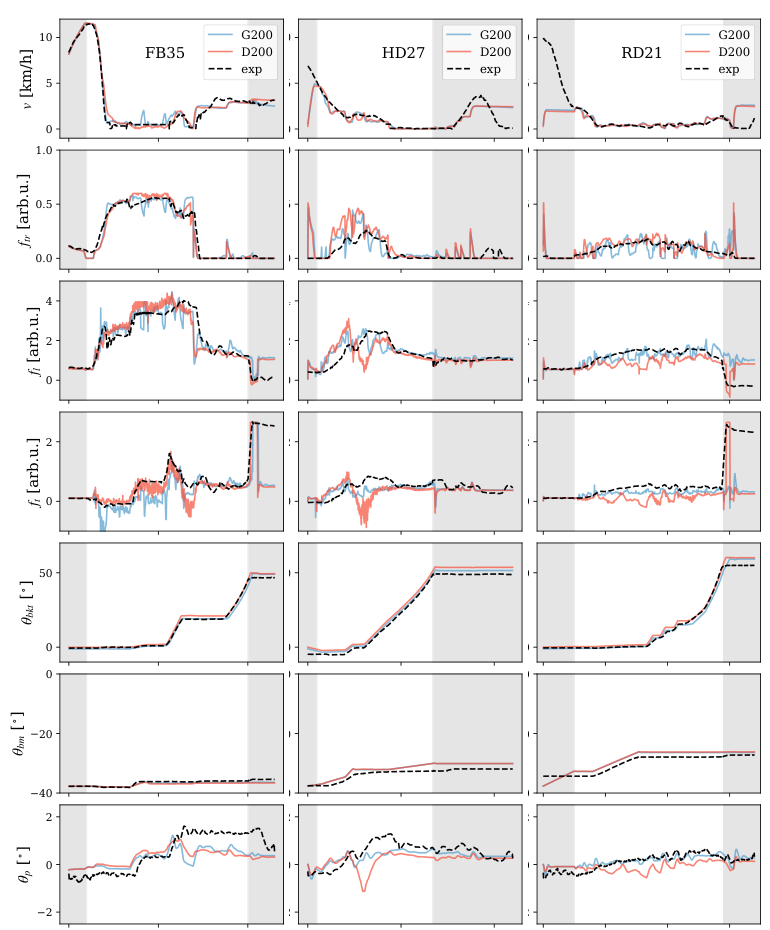
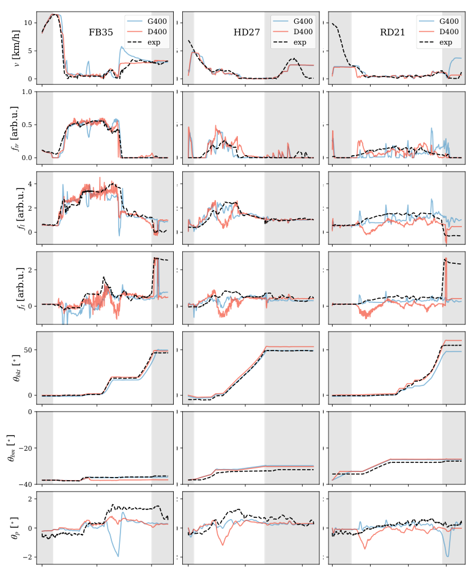
본 연구는 Komatsu Ltd, Algoryx Simulation AB 및 High-Performance Computing Center North(HPC2N)의 Swedish National Infrastructure for Computing으로부터 일부 지원을 받았다.
참고문헌의 논문명·서지 표기는 원문 표기를 유지한다.